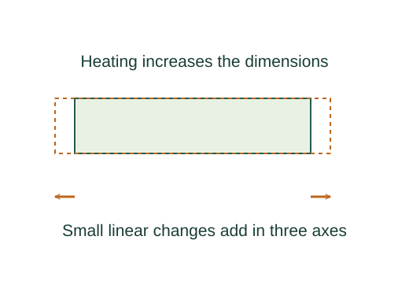

Derive finite expansion and heat-capacity formulas
Linear expansivity is defined by fractional length change per temperature change. Approximating α and the reference length as constant gives the familiar finite-change formula.
What the symbols mean
α: fractional linear expansion per kelvin; β: fractional volume expansion per kelvin; C: heat capacity for a specified process; c = C/m.
When this applies
Small temperature change, isotropic solid for β = 3α, fixed mass, and heat capacity measured along the specified process without a phase transition.

State the differential coefficients
Linear expansivity is defined by fractional length change per temperature change. Approximating α and the reference length as constant gives the familiar finite-change formula.
Expand all three dimensions
For an isotropic solid, each side gains a factor 1 + αΔT. Multiply the factors and neglect second and higher powers.
Integrate the specified heat capacity
Define C along the chosen process by δQ = C(T)dT. Constant C gives Q = CΔT; specific heat c = C/m gives Q = mcΔT.
Separate a change of phase
Latent heat per mass is defined by L = Q/m for the specified transition conditions. At coexistence the heat goes into changing phase rather than raising temperature.
Where each equation comes from
Derived equations link to an argument below. Definitions, physical postulates and constitutive models are identified as the inputs of that argument.
Derivation of the main resultDerived result
Conditions: Small temperature change, isotropic solid for β = 3α, fixed mass, and heat capacity measured along the specified process without a phase transition.
- State the differential coefficients. Linear expansivity is defined by fractional length change per temperature change. Approximating α and the reference length as constant gives the familiar finite-change formula. Explain the equation used in step 1 ↗
- Expand all three dimensions. For an isotropic solid, each side gains a factor 1 + αΔT. Multiply the factors and neglect second and higher powers. Explain the equation used in step 2 ↗
- Integrate the specified heat capacity. Define C along the chosen process by δQ = C(T)dT. Constant C gives Q = CΔT; specific heat c = C/m gives Q = mcΔT. Explain the equation used in step 3 ↗
- Separate a change of phase. Latent heat per mass is defined by L = Q/m for the specified transition conditions. At coexistence the heat goes into changing phase rather than raising temperature. Explain the equation used in step 4 ↗
Equation in step 1Derived result
What is being shown: State the differential coefficients
Linear expansivity is defined by fractional length change per temperature change. Approximating α and the reference length as constant gives the familiar finite-change formula.
Starting conditions and inputs: Small temperature change, isotropic solid for β = 3α, fixed mass, and heat capacity measured along the specified process without a phase transition.
Equation in step 2Derived result
What is being shown: Expand all three dimensions
For an isotropic solid, each side gains a factor 1 + αΔT. Multiply the factors and neglect second and higher powers.
Earlier results used in this argument:
- α ≡ (1/L)dL/dT ⇒ ΔL ≈ αLΔT (Derived result)
Equation in step 3Derived result
What is being shown: Integrate the specified heat capacity
Define C along the chosen process by δQ = C(T)dT. Constant C gives Q = CΔT; specific heat c = C/m gives Q = mcΔT.
Earlier results used in this argument:
- α ≡ (1/L)dL/dT ⇒ ΔL ≈ αLΔT (Derived result)
- Vf = Vi(1 + αΔT)³ ≈ Vi(1 + 3αΔT) (Derived result)
Equation in step 4Derived result
What is being shown: Separate a change of phase
Latent heat per mass is defined by L = Q/m for the specified transition conditions. At coexistence the heat goes into changing phase rather than raising temperature.
Earlier results used in this argument:
- α ≡ (1/L)dL/dT ⇒ ΔL ≈ αLΔT (Derived result)
- Vf = Vi(1 + αΔT)³ ≈ Vi(1 + 3αΔT) (Derived result)
- Q = ∫[Ti,Tf] C(T)dT ⇒ Qconstant C = CΔT = mcΔT (Derived result)
A worked example
For α = 10⁻⁵ K⁻¹ and ΔT = 20 K, a 1 m isotropic rod lengthens by about 0.20 mm.
Derivation behind this calculation ↗A point to keep straight
Expansion coefficients and heat capacities vary with temperature. Heating and pressure constraints must be stated before choosing C.
Check the assumptions and derivation ↗